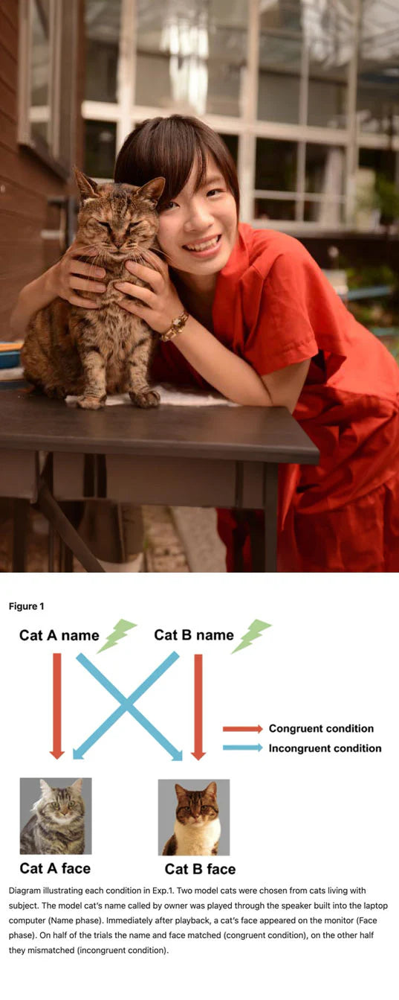
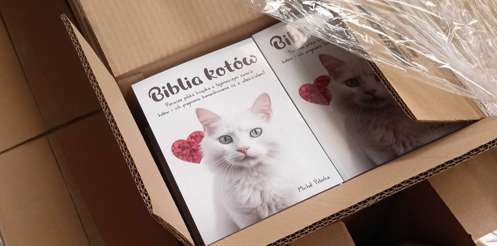
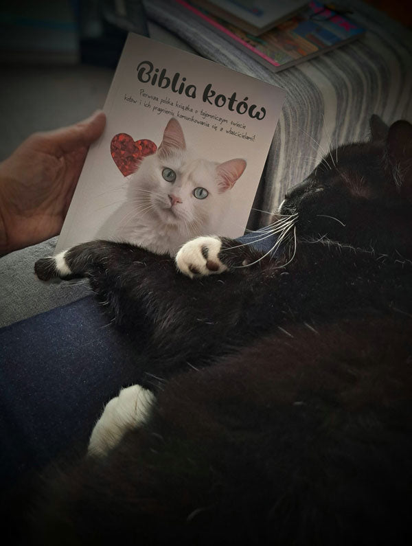
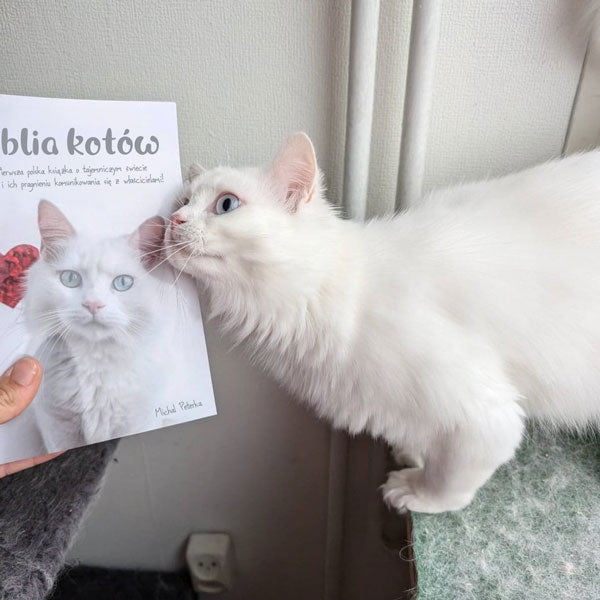
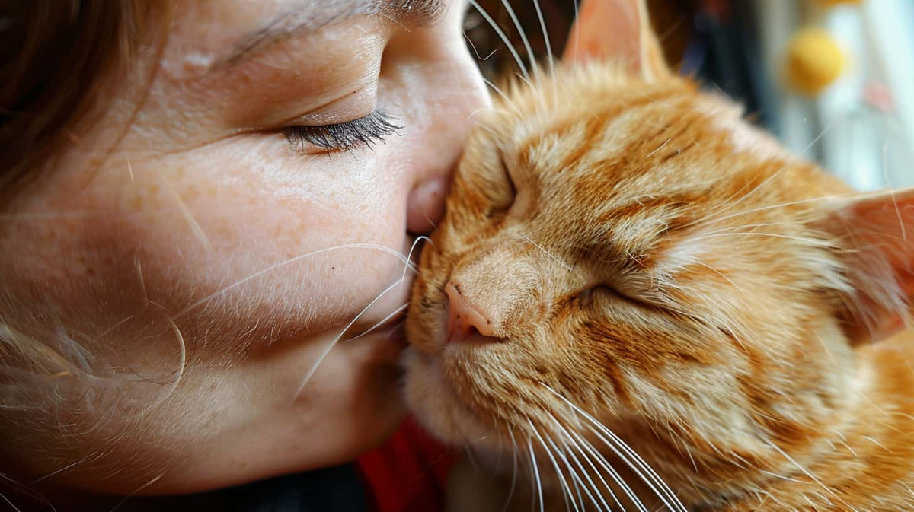
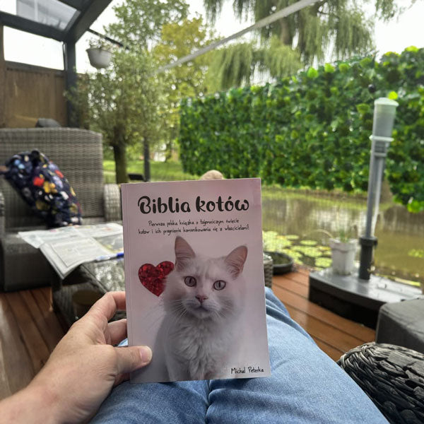
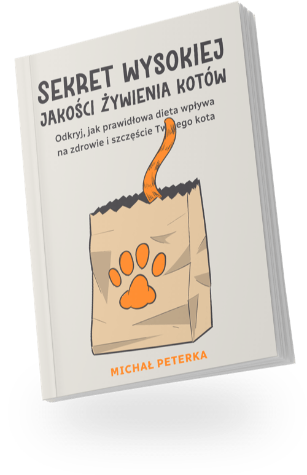
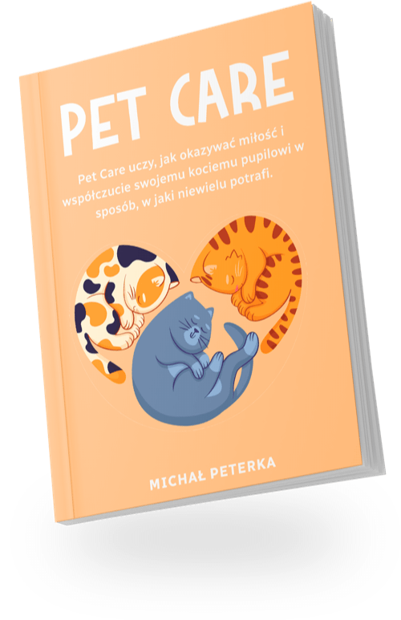

Dlaczego Twój kot sika obok kuwety, niszczy kanapę i udaje, że nie istniejesz — i jak to odwrócić, bez kar i bez zaklinacza kotów.
Poznaj sekretny język swojego kota, pożegnaj się z niechcianymi zachowaniami i zbuduj więź na całe życie – wszystko w ciągu 30 dni.
Jeśli masz już dość życia z kotem, którego nie rozumiesz i który Cię nie słucha — od nieprzespanych nocy i niekończącego się miauczenia, przez wyrzuty sumienia, że może robisz coś źle, aż po chaos w domu, który doprowadza Cię do łez — ta książka da Ci narzędzia, wiedzę i przede wszystkim ten spokój, za którym tak długo tęsknisz.
Ta książka jest dla CIEBIE, jeśli…
Całe mieszkanie jest zniszczone, a Ty nie wiesz, w czym tkwi problem
Twój kot sika wszędzie, tylko nie do kuwety, zapach wsiąkł we wszystko, a Ty zapadasz się ze wstydu, gdy przychodzą goście
Masz już po prostu dość – potrzebujesz się wyspać
każdej nocy to samo: niekończące się miauczenie, drapanie w drzwi, a Ty leżysz w łóżku wykończony i czekasz, aż to się skończy
Twój ukochany przyjaciel nagle Cię zaatakował – gryzie, drapie, ni stąd, ni zowąd
siedzisz we łzach, boli Cię to fizycznie i psychicznie, bo przecież zwierzę nie powinno tak robić, prawda?
Kanapa, krzesła i łóżko powoli nadają się do wymiany
kupiłeś już drapaki, ale nic nie pomaga – Twoje mieszkanie niszczy coś, nad czym nie potrafisz zapanować
Czujesz się jak zły opiekun, choć robisz wszystko, co w Twojej mocy
kochasz go ponad wszystko, ale czasem tak Cię wyprowadza z równowagi, że potem masz wyrzuty sumienia nawet za własne myśli
Próbowałeś już wszystkiego i nie wiesz, co dalej
Feliway, spraye, weterynarz, porady z internetu – i wciąż nie potrafisz sobie z tym poradzić
Marzysz o przytulaśnym kocie, ale Twój ciągle się chowa
tak bardzo chcesz, żeby położył się przy Tobie, ale jest tak płochliwy, że czasem czujesz się odrzucony
Czasem przeszło Ci przez myśl: „Może powinienem go oddać"
ta myśl rozdziera Ci serce, bo kochasz go z całej duszy – ale czasem po prostu nie wiesz, co robić dalej
Jeśli masz poczucie, że jesteś złym opiekunem kota i że powinieneś go lepiej rozumieć – właśnie dostajesz drugą szansę.
Oto 9 powodów, dla których ta książka może zmienić Twoje życie i skończyć z wyrzutami sumienia, nieprzespanymi nocami i niekończącymi się nieporozumieniami.
- → Przekształcisz swojego kota z nieznośnego i upartego zwierzaka w uroczego i posłusznego pupila! Koniec z chaosem, którego nikt nie rozumie. Tu zaczyna się harmonia w domu.
- → Odkryjesz konkretne techniki, jak zatrzymać niechciane drapanie, gryzienie i chaos w domu – bez skomplikowanych metod. 🐾 Nawet jeśli mówisz sobie: „Próbowałem już wszystkiego." Ta książka jest napisana właśnie dla Ciebie.
- → Przestaniesz czuć się jak zły opiekun kota. Jeśli zżerają Cię wyrzuty sumienia, frustracja albo pytanie „co robię źle?", ta książka pokaże Ci, że błąd nie leży w Tobie – to nieporozumienie.
- → Dostaniesz jeden jasny plan zamiast setki sprzecznych porad. Żadnych zagmatwanych forów ani sprayów, które nie działają. Tylko zrozumiałe kroki, które przynoszą efekty – nawet jeśli Twój kot wydaje się „uparty" albo „niedostępny".
- 🎁 BONUS: E-book „Szkolenie kota" – kuweta, agresja, trening. Konkretne ćwiczenia krok po kroku, dzięki którym Twój kot nauczy się dobrych nawyków. Bez kar, bez stresu.
- 🎁 BONUS: E-book „Sekret wysokiej jakości żywienia kota" – To, co codziennie trafia do miski, decyduje o energii, lśniącej sierści i długim, witalnym życiu Twojego kota. Większość opiekunów nigdy tego nie odkrywa. Ty tak.
- 🎁 BONUS: E-book „PETCARE — Opieka nad kotem" – Kompletny przewodnik po codziennej opiece: zdrowie, pielęgnacja, bezstresowe środowisko. Wszystko, czego szczęśliwy kot potrzebuje na co dzień.
- 🎁 SUPERBONUS: E-book „999 imion dla kotów" – Największa kolekcja kocich imion w Polsce. Idealny prezent dla każdego, kto wita w domu nowego mruczka — albo po prostu kocha koty. 😻
- → Dostawa jest ZA DARMO – płacisz tylko za książkę. 📦 Bo opiekun kota, który szuka pomocy, nie zasługuje na kolejne przeszkody.
- → Zero ryzyka – 100% gwarancja satysfakcji. Nie widzisz poprawy u swojego kota? Zwrócimy Ci każdą złotówkę. Bez pytań, bez komplikacji.
- → Nie jesteś w tym sam: 92% miłośników kotów zauważa efekty w ciągu miesiąca. Dołącz do nich. Twój kot też da radę.
- → Wreszcie odzyskasz spokój – w dzień i w nocy. Mniej stresu. Mniej łez z frustracji. Mniej „nie wiem już, co robić". A więcej zrozumienia, harmonii i prawdziwej więzi z Twoim kotem.

13 kwietnia 2022 roku dr Saho Takagi z Uniwersytetu w Kioto przeprowadziła badanie, w którym sprawdzała, czy koty potrafią łączyć imiona swoich kocich przyjaciół z ich twarzami.
Do testów wykorzystano bodźce wizualno-słuchowe na ekranie komputera.
Okazało się, że koty domowe wykazywały dłuższe zainteresowanie ekranem, gdy między usłyszanym imieniem a pokazaną twarzą istniała niezgodność, co sugeruje, że potrafią rozpoznać rozbieżność między imieniem a twarzą.
To zachowanie wskazuje, że koty mogą wykorzystywać uczenie społeczne, by kognitywnie przetwarzać imiona i łączyć je z konkretnymi osobnikami, bez żadnego celowego treningu.

📋 Specyfikacja produktu
| Tytuł | Biblia kotów |
| Autor | Michał Peterka |
| Liczba stron | 235 |
| W zestawie | 4 bonusowe e-booki |
| Język | Polski |
| Format | Miękka oprawa |
| Cena | 89 zł z VAT |
| Dostawa | Za darmo (cała Polska) |
| Gwarancja | 100% gwarancja zwrotu pieniędzy |
Ta książka może być dokładnie tym, czego brakowało Ci do zrozumienia Twojego kota 🐱
Dyfuzory Feliway, spraye, sprzeczne porady z internetu – nic z tego nie działało. A weterynarz powiedział „to kwestia zachowania", ale żadnego prawdziwego rozwiązania nie zaproponował. Musi istnieć inna droga – taka, która wynika z tego, jak koty naprawdę myślą i się komunikują.
📘 Biblia kotów to przewodnik, który przekłada kocią psychologię na praktykę. Wreszcie dowiesz się, dlaczego Twój kot robi to, co robi – i jak komunikować się z nim w sposób, który on rozumie.
Dlaczego tradycyjne metody nie działały:
- Ignorowały, jak naprawdę działa koci mózg,
- leczyły tylko objawy, a nie przyczyny,
- dawały Ci pojedyncze wskazówki bez spójnego systemu.
Biblia kotów podchodzi do tego inaczej. Na podstawie nauki o zachowaniu i kociej psychologii nauczysz się rozumieć język swojego kota, dlaczego wydaje się „problematyczny" i jak wykorzystać jego naturalne instynkty. Naukowo potwierdzone metody wyjaśnione normalnym, ludzkim językiem – do zastosowania jeszcze dziś.
💛 Co dziś otrzymujesz:
- Biblia kotów (235 stron) – kompletny system oparty na kociej psychologii
- 4 bonusowe e-booki – Szkolenie kota, Sekret wysokiej jakości żywienia kota, PETCARE — Opieka nad kotem oraz SUPERBONUS 999 imion dla kotów
- Darmowa dostawa w całej Polsce
- 100% gwarancja satysfakcji – nie działa? Zwrócimy Ci każdą złotówkę
✨ Naucz się wreszcie języka swojego kota.
Kliknij poniżej i zamów swój egzemplarz jeszcze dziś. Przestań zgadywać, co Twój kot ma na myśli – i zacznij go naprawdę rozumieć. W sposób, który wam obojgu przyniesie spokój, zaufanie i prawdziwą więź 🐾
MONEY
BACK
100% gwarancja zwrotu pieniędzy
Masz 14 dni – nie jesteś zadowolony z książki? Napisz do nas, a zwrócimy Ci pieniądze. Nie musisz nawet odsyłać książki.
📖 Zajrzyj do książki — przykładowe strony pełne praktycznych wskazówek, które możesz wypróbować u swojego kota jeszcze dziś 🎯
To nie Twoja wina. Nigdy nie była. Ale co, jeśli istnieje coś, o czym nie wiedziałeś?
Jeśli masz już dość tego, że nie rozumiesz własnego kota…
Jeśli wieczorami siedzisz na kanapie i zastanawiasz się, co zrobiłeś źle, dlaczego ciągle sika poza kuwetą, dlaczego budzi Cię w nocy albo dlaczego nagle Cię gryzie…
Jeśli wciąż masz nadzieję, że samo się poprawi, że może się przyzwyczai – ale każdy dzień wygląda jak ta sama walka i nic się nie zmienia…
To jest najważniejsza książka, jaką kiedykolwiek otworzysz.
A oto dlaczego:
Myśli krążyły mi po głowie bez przerwy – jak niekończąca się pętla, która nigdy nie ustaje.
„Powinienem był od początku podejść do niej inaczej?"
„Może po prostu nie jestem dobrym opiekunem kota."
„To wszystko moja wina, że taka jest."
Każdy dzień wyglądał jak powtarzający się scenariusz – znowu sprzątać te mokre plamy, znowu nieprzespana noc, znowu zadrapania na kanapie. A w sercu?
Wyrzuty sumienia. Frustracja. Zero spokoju.
Wyobrażałem sobie życie z kotem zupełnie inaczej. Przytulaśny kot na kolanach. Kochany przyjaciel, który sam przychodzi się przytulić. Miłość zamiast nieporozumień. Próbowałem wszystkiego: Feliway, spraye, weterynarze, porady z internetu, kolejne kuwety…
Ale nic nie rozwiązywało prawdziwego problemu. Nic nie działało. Tylko kolejny dzień… ta sama frustracja… to samo pytanie: „Co robię źle?"
„Dlaczego ciągle się chowa?"
„Dlaczego atakuje mnie bez powodu?"
„Dlaczego innym udaje się mieć szczęśliwego kota?"
Czułem, że tracę więź ze swoim kotem.
I zacząłem wątpić, czy kiedykolwiek będziemy mieli ten spokojny, harmonijny wspólny dom.

Każdy dzień bez tej książki to kolejny dzień uwięziony w tych samych nieporozumieniach.
Ile nocy już zmarnowałeś na bezsenność, wyrzuty sumienia i frustrację – „Dlaczego on to robi… co ja robię źle…"
Ile razy marzyłeś, żeby ten chaos wreszcie się skończył?
Żeby wreszcie był spokój – w dzień i w nocy?
Każda minuta bez właściwej wiedzy kosztuje Cię więcej stresu, łez i zniszczonych mebli, niż na to zasługujesz.
A każdy dzień zwłoki to dzień, w którym oboje pozostajecie uwięzieni w tym samym cierpieniu.
Pewnego dnia powiedziałem sobie: „Dość!"
Miałem dość życia w cieniu wyrzutów sumienia, frustracji i niekończących się nieporozumień.
Zacząłem szukać odpowiedzi – i właśnie to doprowadziło mnie do odkryć, które zmieniły nie tylko moje życie, ale i życie tysięcy miłośników kotów.
Dzięki tej wiedzy przestałem być więźniem własnego niezrozumienia.
A zamiast nieprzespanych nocy i łez wreszcie znalazłem spokój i więź, za którą tak długo tęskniłem. Co stało się potem?
Mój kot zaczął się zmieniać. A raczej: ja wreszcie zacząłem go rozumieć.
Przestał sikać poza kuwetą.
Zaczął sam przychodzić się przytulić.
Stał się tym przytulaśnym kotem, o którym zawsze marzyłem.
I tak zacząłem dzielić się tym, co naprawdę działa. Żadnych mglistych teorii. Żadnych sprayów ani drogich preparatów. Tylko to, co pomaga w prawdziwych chwilach chaosu, frustracji i rozpaczy.
Efektem jest ta książka. Książka, która nie jest tylko o „naprawianiu kociego zachowania", ale o tym, jak wreszcie zrozumieć swojego kota.
O wzajemnej więzi. I o tym, jak przestać obwiniać samego siebie. Nieważne, czy walczysz z sikaniem poza kuwetą, nocnym miauczeniem, agresją czy płochliwym kotkiem, który nigdy do Ciebie nie przychodzi.
Ta książka pokaże Ci drogę powrotną do harmonii.
W Twoim tempie.
Bez kar.
Bez frustracji.
Bez wyrzutów sumienia.
I wiesz co?
Nie jestem jedynym, któremu to pomogło.
Im i mnie. Ludzie, którzy latami walczyli ze swoim kotem, nagle znów zaczęli spokojnie sypiać.
Ci, którzy tonęli w wyrzutach sumienia i frustracji, po raz pierwszy znów patrzyli na swojego kota z miłością – bez rozpaczy.
A ci, którzy czuli się zupełnie bez nadziei, znaleźli drogę powrotną do harmonijnego życia ze swoim kotem.
I uwaga – to podejście działa tak dobrze dlatego, że naprawdę celuje w to, co powoduje problem u samego źródła.
Od niekończącego się sikania poza kuwetą po nocne miauczenie. Od zniszczonych mebli po nieprzespane noce.
Od „po prostu go nie rozumiem" aż po rozpacz. Każdy krok w tej książce jest starannie zbudowany tak, by prowadzić do prawdziwej zmiany – a nie tylko kilku wskazówek na parę dni.
A rezultaty?
Dokładnie to, za czym wszyscy tęsknimy: spokój, harmonia i poczucie, że wreszcie jesteście połączeni – z Twoim kotem, z samym sobą i ze wspólnym życiem.
I wiesz co?
Mógłbym o tym napisać całą kolejną książkę – tylko o historiach opiekunów kotów, których życie z kotem dzięki temu podejściu całkowicie się zmieniło.
Bo dzieliłem się tymi metodami z ludźmi w każdym wieku, z każdym rodzajem kota i z najróżniejszymi problemami. Od tych, którzy właśnie przywieźli do domu kociaka…
Po tych, którzy już 10 lat walczyli z tymi samymi problemami. Od ludzi z płochliwymi kotami, które nigdy same się do nich nie zbliżyły…
Po tych, którzy całkowicie stracili więź ze swoim kotem. A rezultat? Spokój, którego nawet nie potrafili sobie wyobrazić.
Spokojne noce tam, gdzie całe życie panował chaos.
Kot, który sam przyszedł się przytulić. I przestrzeń na prawdziwe chwile bliskości.
Niektórzy „eksperci" pytali mnie nawet:
Czy to naprawdę działa?
Czy to nie jest trochę zbyt proste?
Cóż…
do tego jeszcze dojdziemy. Ale najpierw – spójrzmy na kolejne dowody, że ta droga naprawdę działa. 🐱✨

🐱 Tysiące miłośników kotów znalazło spokój i więź ze swoim kotem – zaczynali dokładnie tak jak Ty: zmęczeni nieporozumieniami, ale gotowi na zmianę ✨

Jak za dotknięciem czarodziejskiej różdżki…
Im więcej pracowałem z opiekunami kotów, którzy byli zdesperowani, sfrustrowani albo wykończeni, tym bardziej stawało się to jasne: to podejście działa u wszystkich kotów.
Czułem, że to podejście jest inne – ale początkowo nie wiedziałem dokładnie dlaczego. Więc poszedłem głębiej. Zacząłem dostrzegać schematy.
Powtarzające się nieporozumienia, błędne założenia, które wracały wciąż na nowo – u opiekuna i u kota.
Testowałem. Obserwowałem. Analizowałem. I krok po kroku zbudowałem system, który nie leczy tylko objawów, ale przyczynę. A rezultaty?
Opiekunowie kotów, którzy myśleli, że ich kot nigdy się nie zmieni, nagle zobaczyli prawdziwy postęp.
Ci, którzy wierzyli, że „mój kot po prostu taki jest", znów zaczęli cieszyć się swoim kotem.
A kto czuł się zupełnie bez nadziei, odzyskał swoją pewność.
Od tamtej pory stosowałem ten system na niemal wszystkie problemy, z którymi opiekunowie kotów walczą najczęściej:
- Sikanie poza kuwetą: Dowiedz się, dlaczego Twój kot to robi i jak to raz na zawsze zatrzymać – bez kar, bez frustracji. Zamiast tego odzyskasz świeży i czysty dom.
- Nocne miauczenie i drapanie: Dostaniesz narzędzia, by rozwiązać to zachowanie u źródła – nie krzykiem czy ignorowaniem, ale zrozumieniem, dlaczego Twój kot to robi, i jak wreszcie znów przespać całą noc.
- Nagła agresja: Naucz się, jak zapobiegać atakom i rozumieć, co kot próbuje Ci powiedzieć. Odkryjesz, że znów możesz czuć się bezpiecznie we własnym mieszkaniu.
- Niszczenie mebli: Przestaniesz wracać do domu do zniszczonych kanap i krzeseł i nauczysz się, jak dać kotu to, czego potrzebuje. Twoje mieszkanie znów będzie miejscem spokoju, a nie polem bitwy.
- Płochliwy lub zdystansowany kot: Odkryj, jak zbudować więź z kotem, który się chowa albo nigdy do Ciebie nie przychodzi – bez zmuszania, ale przez zdobycie jego zaufania.
- „Mój kot mnie nie rozumie": Naucz się mówić językiem swojego kota – i jak zamienić nieporozumienia w więź. Nie tylko „mieć nadzieję, że będzie lepiej", ale naprawdę nawiązać kontakt ze swoim kotem.
📊 92% czytelników Biblii kotów zauważyło już w ciągu pierwszego miesiąca prawdziwą zmianę – więcej spokoju, harmonii i więzi ze swoim kotem! 🐱
I działa to w każdej sytuacji, w której walczysz z kotem, który Cię codziennie wyczerpuje.
Ten system możesz zastosować we własnym życiu – i wreszcie zacząć cieszyć się spokojem, harmonią i pewnością, że dasz radę.
To nie teoria. I nie puste porady z internetu.
To praktyczny, sprawdzony system, który właśnie teraz pomaga tysiącom miłośników kotów w całej Polsce radzić sobie z sikaniem poza kuwetą, nocnym miauczeniem, agresją i płochliwymi kotami.
Każde narzędzie w tej książce pochodzi prosto z praktyki – powstało z wieloletnich doświadczeń, prawdziwych kotów, prób i błędów.
I właśnie dlatego postanowiłem podzielić się swoją wiedzą. Żebyś Ty nie musiał przechodzić przez tę samą walkę co ja.
Te niekończące się nieprzespane noce, kiedy tylko leżysz i czekasz, aż miauczenie ustanie. To wyczerpujące uczucie, gdy próbujesz wszystkiego… i nic nie działa.
Ta cicha rozpacz, kiedy mówisz sobie:
„Może to już nigdy nie będzie lepsze."
Ale nie musisz tam zostawać.
Ta książka pokaże Ci, że istnieje inna droga – i że jest bliżej, niż myślisz.
I rozumiem, jeśli jeszcze się wahasz. Ale spokojnie – za chwilę zdradzę Ci „sekret" tego, dlaczego dzielę się tym wszystkim… i dlaczego nie kosztuje to setek czy tysięcy złotych jak drodzy specjaliści od zachowań czy niekończące się wizyty u weterynarza.
Ale najpierw – spójrzmy na…
🐱 Tysiące miłośników kotów w Polsce zauważyło poprawę już w ciągu kilku dni. Zrozumienie swojego kota to początek zmiany 💡
🐱 Dołącz do tysięcy opiekunów,
którzy wreszcie rozumieją swojego kota.
Zrozumienie to początek harmonii 💡

„Jako początkująca właścicielka kota miałam na początku trudności ze zrozumieniem mojego nowego współlokatora. Ale Biblia kotów wszystko zmieniła! Jasne wyjaśnienia i zabawne ilustracje sprawiają, że czytanie jest nie tylko łatwe, ale i przyjemne. Dzięki tej książce ja i mój kot tworzymy teraz świetny zespół. 🐾"
„Moja żona przygarnęła kota do swojego drugiego mieszkania, ale na początku nie podobało jej się jego zachowanie. Teraz kot ją uwielbia, a my znacznie lepiej rozumiemy naszych czworonożnych współlokatorów. Książka otworzyła nam oczy i zamieniła nasz dom w raj dla kotów (i dla nas 😁). Jeśli masz kota lub dopiero o nim myślisz, ta książka zmieni Twoje życie!"
„Kupiłem Biblię kotów dla mojej dziewięcioletniej siostrzenicy... Teraz czyta tę książkę nawet ze swoimi koleżankami. Co więcej, nawet ja przeczytałem ją podczas popołudniowej drzemki :-)"
„Kupiłam Biblię kotów, ponieważ chciałam lepiej zrozumieć mojego kota. Dzięki praktycznym wskazówkom i wiedzy teraz o wiele lepiej rozumiem jego zachowanie. Mój kot wygląda na szczęśliwszego, a w naszym domu panuje znacznie większy spokój. Naprawdę polecam każdemu miłośnikowi kotów! 😻"
Kim jest autor książki, która pomogła tysiącom opiekunów kotów przejść od nieporozumień do harmonii ze swoim kotem?
Wyobraź sobie: badacza zachowań zwierząt, który nie zna tylko teorii, ale naprawdę Cię rozumie. Kogoś, kto sam przeszedł piekło ze swoimi kotami – nieprzespane noce, wyrzuty sumienia, rozpacz – i znalazł drogę powrotną.
To ja – Michał Peterka. Niektórzy mówią na mnie „Koci Człowiek".
Byłem dokładnie tam, gdzie Ty jesteś teraz.
Lata temu każdej nocy siedziałem w łóżku i czekałem, aż miauczenie ustanie. Mój kot sikał gdzie popadnie, tylko nie do kuwety. Wstydziłem się, gdy przychodzili goście. I ciągle powtarzałem sobie: „Co robię źle?"
Byłem tym „miłośnikiem kotów", który kochał swoje koty z całego serca – ale ich nie rozumiał.
Aż zrozumiałem: problemem nie był „zły kot" – było nim nieporozumienie.
Moje kwalifikacje? Rezultaty, które mówią same za siebie:
- Ponad 14 lat praktycznego doświadczenia z kotami w prawdziwych rodzinach
- Badacz zachowań zwierząt ze specjalizacją w kocim behawiorze
- Specjalizacja w problematycznych zachowaniach (sikanie poza kuwetą, agresja, nocne miauczenie, płochliwe koty)
- Metody pełne szacunku – żadnych kar, żadnych sprayów, żadnej przemocy
- Wykształcenie w zakresie kociej psychologii i nauk behawioralnych
- Doświadczenie ze wszystkimi rasami i grupami wiekowymi (od kociąt po seniorów, od dachowca po ragdolla)
Ale zapomnij o certyfikatach.
To, co naprawdę się liczy: tysiące opiekunów kotów dzięki mojemu systemowi odzyskało spokój i więź ze swoim kotem.
Opiekunowie kotów, którzy walczyli latami. Którzy wypróbowali Feliway, spraye i niekończące się wizyty u weterynarza. Którzy płakali w nocy i mówili sobie: „Może powinienem go oddać."
Szokujące odkrycie, które wszystko zmieniło:
Po latach pracy z tysiącami kotów i ich opiekunami dostrzegłem schemat.
92% problemów nie powodował „zły kot" – lecz nieporozumienie między człowiekiem a zwierzęciem.
Rozwiązanie?
Kompleksowe podejście, które łączy cztery filary:
- Mowa ciała i komunikacja (naucz się mówić językiem swojego kota)
- Wzbogacenie środowiska (zadowolony kot potrzebuje właściwej przestrzeni)
- Redukcja stresu i spokój (zrelaksowany kot to grzeczny kot)
- Żywienie i zdrowie (to, co Twój kot je, wpływa na jego zachowanie)
📊 92% czytelników Biblii kotów zauważyło już w ciągu pierwszego miesiąca prawdziwą zmianę – mniej sikania poza kuwetą, spokojne noce i silniejszą więź 🐱
Może to nie pierwszy raz, kiedy szukasz pomocy 🐱
I może właśnie dlatego to mogłaby być ostatnia książka, jakiej naprawdę potrzebujesz, żeby zrozumieć swojego kota.
Może próbowałeś już niejednego.
Dyfuzory Feliway, które niczego nie zmieniły.
Spraye i preparaty, które działały… kilka dni.
Wizyty u weterynarza, gdzie słyszałeś: „To kwestia zachowania" – ale żadnego prawdziwego rozwiązania nie dostałeś.
A mimo to tu jesteś. I to coś znaczy. Znaczy, że jeszcze nie straciłeś wiary.
Że w głębi duszy wciąż wiesz, że zmiana jest możliwa. Że harmonia z Twoim kotem to nie sen, lecz kwestia zrozumienia. I że nieporozumienia nie muszą na zawsze być częścią Twojego życia.
🐱 Biblia kotów to nie plaster – to kompletny system. System, który poprowadzi Cię z powrotem do porozumienia z Twoim kotem.
System z powrotem do spokoju. Autor z wieloletnim doświadczeniem z tysiącami kotów i ich opiekunami dzieli się w tej książce jasnymi, skutecznymi i praktycznymi krokami, które pomogły tysiącom miłośników kotów:
- raz na zawsze skończyć z sikaniem poza kuwetą,
- przerwać karuzelę nieprzespanych nocy, chaosu i wyrzutów sumienia,
- na nowo odnaleźć więź – ze swoim kotem, z samym sobą i ze wspólnym życiem.
Nie oczekuj skomplikowanej teorii bez praktyki. Ani kar czy sprayów, które i tak nie działają. Oczekuj jasności. Zrozumienia. I rezultatów.
✨ Pierwszy krok jest mały. Ale może zmienić wszystko.
Nie musisz mieć wszystkiego poukładanego, żeby zacząć. Nie musisz być ekspertem od kotów – wystarczy być otwartym na myśl, że Twój kot nie jest „niegrzeczny", tylko niezrozumiany.
👉 Kliknij przycisk i zacznij czytać.
Może właśnie tutaj znajdziesz ten spokój i więź ze swoim kotem, których szukałeś przez cały ten czas.
Darmowa dostawa
Dostawa jest ZA DARMO – płacisz tylko za książkę, o resztę zadbamy my.
🎁 Do każdego zamówienia dodajemy 4 bonusowe e-booki — wiedzę, za którą gdzie indziej byś zapłacił. U nas to prezent.
🎁 BONUS 1: E-book „Szkolenie kota"
Kuweta. Agresja. Trening. Trzy obszary, w których opiekunowie kotów najczęściej się poddają — bo „kota nie da się wyszkolić". Da się. Tylko nie tak, jak psa. Ten e-book pokaże Ci jak:
- Kuweta bez wypadków – krok po kroku do czystego domu, bez krzyku i bez stresu
- Koniec z gryzieniem i drapaniem – zrozumiesz, skąd bierze się agresja, i nauczysz się jej zapobiegać
- Trening, który kot lubi – proste ćwiczenia budujące dobre nawyki i wzajemne zaufanie 🐾

🎁 BONUS 2: E-book „Sekret wysokiej jakości żywienia kota"
Tajemnica zdrowego, szczęśliwego i zrównoważonego kota jest w Twoich rękach. To, co codziennie trafia do miski, decyduje nie tylko o jego energii – ale też o tym, jak długo i jak dobrze będzie żył. Większość opiekunów nigdy tego nie odkrywa. Ty tak:
- Silny układ odpornościowy – mniej zmartwień o zbędne wizyty u weterynarza i niespodziewane rachunki
- Lśniąca sierść i zdrowa skóra – Twój kot będzie wyglądał świetnie i czuł się jeszcze lepiej
- Długo i szczęśliwie razem – właściwym żywieniem dasz swojemu pupilowi najlepszą szansę na długie, witalne życie ❤️

🎁 BONUS 3: E-book „PETCARE — Opieka nad kotem"
Zdrowie, pielęgnacja, bezstresowe środowisko. Kompletny przewodnik po codziennej opiece nad kotem – od pierwszego dnia w nowym domu po kocią starość. Wszystko w jednym miejscu, zamiast godzin przekopywania sprzecznych porad z internetu:
- Codzienna pielęgnacja bez walki – sierść, pazury, zęby: jak to robić, żeby kot współpracował
- Bezstresowe środowisko – jak urządzić mieszkanie, w którym kot czuje się bezpiecznie i pewnie
- Zdrowie pod kontrolą – sygnały ostrzegawcze, które warto znać, zanim problem stanie się poważny
- Szczęśliwy, spokojny kot – bo dobra opieka to fundament dobrego zachowania 🐱
🎁 SUPERBONUS 4: E-book „999 imion dla kotów"
Nowy mruczek w domu i głowa pełna pytań, jak go nazwać? Albo po prostu uwielbiasz koty i wszystko, co z nimi związane? Ten e-book to największa kolekcja kocich imion, jaką znajdziesz – z podziałem, który naprawdę pomaga wybrać:
- 999 imion w jednym miejscu – klasyczne, zabawne, eleganckie i zupełnie nieoczywiste
- Dla kocurów i kotek – przejrzysty podział, żebyś nie musiał przekopywać się przez wszystko
- Idealny prezent – także dla każdego, kto dopiero planuje przygarnąć kota 😻
Może właśnie się zastanawiasz – „Dlaczego miałbym wydawać pieniądze na tę książkę?" 🤔📘 Odpowiedź jest prosta:
Daję Ci 100% gwarancję zwrotu pieniędzy, jeśli nie zobaczysz poprawy u swojego kota. 💸 Nie zauważysz spokojniejszego zachowania, mniej sikania poza kuwetą albo pierwszego kroku do wzajemnego zrozumienia? Zwrócimy Ci całą kwotę. Masz na to 14 dni – i nie musisz nawet odsyłać książki. Bez pytań. Bez wymówek. Bez stresu. ✅
Nie masz nic do stracenia – tylko szansę, by wreszcie przejść od nieporozumień do harmonii… i poczuć, jak to jest znów cieszyć się swoim kotem bez wyrzutów sumienia. 🐱💛
Na rynku są setki książek o kocim zachowaniu. Ale żadna nawet nie zbliża się do tej. Dlaczego? Większość książek daje Ci pojedyncze wskazówki, które ładnie brzmią, ale w praktyce nie działają. Albo są zbyt naukowe i niezrozumiałe dla zwykłych opiekunów kotów. My stworzyliśmy przewodnik, który jest: aktualny, oparty na kociej psychologii, a przede wszystkim: sprawdzony w praktyce na prawdziwych kotach i z prawdziwymi opiekunami, którzy czuli dokładnie to, co Ty teraz.
Czym ta książka różni się od innych:
- Praktyczna użyteczność – To nie jest teoria ani puste obietnice. Znajdziesz tu konkretne kroki i wskazówki, które możesz zastosować od razu – nawet jeśli Twój kot właśnie teraz sika gdzie popadnie, budzi Cię w nocy albo atakuje Cię znienacka.
- Oparte na kociej psychologii i praktycznym doświadczeniu – Każda wskazówka w tej książce wynika ze sprawdzonych metod z pracy z tysiącami kotów. Żadnych domysłów. Żadnych kar ani sprayów. Tylko to, co naprawdę działa – z szacunkiem dla Twojego kota.
- Skupienie na przyczynie, a nie powierzchownych plastrach – Ta książka nie pomaga Ci tylko „stłumić problem" za pomocą Feliway czy preparatów. Pokaże Ci, jak zrozumieć prawdziwą przyczynę zachowania – i tym samym zmienić całą dynamikę między Tobą a Twoim kotem.
- Napisana przez kogoś, kto to rozumie – Autor wie, jak to jest – nieprzespane noce, wyrzuty sumienia, pytanie „co robię źle?". Dlatego ta książka nie mówi do Ciebie jak „ekspert z piedestału", ale jak ktoś, kto rozumie, jak to jest, gdy nie wiesz już, co robić.
- Kompletny system, którego nie znajdziesz nigdzie indziej – Odkryj, jak mowa ciała, wzbogacenie środowiska, redukcja stresu i żywienie współdziałają w przemianie Twojego kota – nie pojedyncze wskazówki, ale spójny system, który buduje prawdziwą więź.
Jak długo jeszcze będziesz czekać, aż nieporozumienia się skończą?
Każdy dzień czekania to kolejny dzień uwięziony w wyrzutach sumienia i frustracji.
Jak długo jeszcze chcesz znosić nieprzespane noce i łzy?
Zasługujesz na to, by cieszyć się swoim kotem bez wyrzutów sumienia. Nie „kiedyś". Teraz.
Jak długo jeszcze będziesz pytać „co robię źle?"
Klucz do harmonii z Twoim kotem jest o jedno kliknięcie stąd. Weź go.
🐱 Zainteresowanie tą książką jest ogromne! Jeśli strona po złożeniu zamówienia ładuje się nieco wolniej, prosimy o chwilę cierpliwości 🙏
Zdobądź pakiet Biblii kotów z 4 e-bookami, zanim zostanie wyprzedany, a cena znów wzrośnie do 119 zł. Na magazynie zostało jedynie 850 książek.
🐱 Ten kompletny pakiet otrzymujesz za jedyne 89 zł – mniej niż jedna konsultacja u kociego behawiorysty albo spray, który i tak nie działa.
Ale w przeciwieństwie do tych rzeczy ta książka daje Ci wartość na całe życie. 📖💛
Pomoże Ci znaleźć spokój z Twoim kotem, uwolnić się od chaosu, który trzyma Cię od miesięcy albo lat, i znów poczuć, że jesteś dobrym opiekunem. 🐱❤️
Dzięki tej małej inwestycji dostajesz dostęp do kompletnego systemu, za którym tak długo tęsknisz – zamiast wydawać setki złotych na kursy, terapeutów czy zniszczone rzeczy. 💸✨
Dwa koty w domu? Wyrazy współczucia — i 2 książki za 149 zł zamiast 238 zł.
Chcę Biblię kotów! →Dostępne od ręki · Wysyłka w 24 godziny · Darmowa dostawa
P.S. Twój kot sam sobie tej książki nie kupi. Kciuki masz Ty.
Gwarancja „Nawet gdyby Twój kot pozostał lodowaty" ❄️
Czytaj 14 dni. Wypróbuj ćwiczenia. Jeśli nie zauważysz różnicy — albo jeśli Jego Wysokość uzna, że to poniżej jego poziomu — napiszesz nam jednego e-maila, a my zwrócimy Ci każdą złotówkę. Nie musisz nawet odsyłać książki. Ryzykujemy my, nie Ty.
❓ Najczęściej zadawane pytania 💬
Czym jest Biblia kotów i jak może pomóc w opiece nad Twoim kotem?
Biblia kotów to praktyczny przewodnik na 235 stronach, który przekłada kocią psychologię na codzienną praktykę. Nie znajdziesz w niej mglistych teorii ani sprayów, które i tak nie działają. Jest oparta na wieloletnim praktycznym doświadczeniu z tysiącami kotów – od kotów, które sikają gdzie popadnie, po koty, które znienacka atakują swojego opiekuna. Autor zbudował ten system, pracując z opiekunami kotów, którzy mieli dokładnie te same problemy co Ty: nieprzespane noce, wyrzuty sumienia i pytanie „co robię źle?". Dlatego 92% czytelników zauważa wyraźną poprawę już w ciągu pierwszego miesiąca. Różnica tkwi w kompleksowym podejściu: nie pojedyncze wskazówki, lecz spójny system, który rozwiązuje przyczynę – nawet u kotów, które wykazują problematyczne zachowania od lat. A z naszą gwarancją zwrotu pieniędzy absolutnie nic nie ryzykujesz.
Próbowałem już Feliway, sprayów i wizyt u weterynarza. Dlaczego to miałoby być inne?
Rozumiem sceptycyzm – frustrujące jest inwestowanie czasu, pieniędzy i nadziei w kolejne preparaty, które ostatecznie nie przynoszą prawdziwej zmiany. Tym, co wyróżnia tę książkę, jest to, że nie skupia się na tłumieniu objawów, lecz na zrozumieniu Twojego kota. Feliway i spraye nie rozwiązują przyczyny – są jak plastry na ranę, która wciąż krwawi. Ta książka pokaże Ci, dlaczego Twój kot robi to, co robi, i jak dzięki zrozumieniu i właściwemu podejściu możesz zmienić całą dynamikę między wami. Powstała z prawdziwych historii opiekunów kotów, którzy też „próbowali wszystkiego", ale ostatecznie dzięki temu kompleksowemu podejściu znaleźli harmonię. A gdyby książka mimo wszystko Ci nie odpowiadała, dzięki naszej gwarancji zwrotu pieniędzy możesz ją wypróbować całkowicie bez ryzyka.
Czy zawartość jest odpowiednia zarówno dla początkujących, jak i doświadczonych opiekunów?
Tak – i to celowo. Każdy kot jest wyjątkowy i nosi w sobie własną historię. Właśnie dlatego Biblia kotów oferuje elastyczne podejścia dopasowane do różnych sytuacji – od energicznych kociąt po starsze koty, od lękliwych kotów ze schroniska po koty rasowe ze specyficznymi potrzebami. Zasady w książce wynikają z kociej psychologii, która dotyczy wszystkich kotów niezależnie od wieku, pochodzenia czy rasy. Jeśli dopiero zaczynasz przygodę z kotem, dostaniesz solidny fundament od pierwszego dnia. Jeśli masz koty od lat, odkryjesz, dlaczego niektóre rzeczy nigdy nie działały – i jak to zmienić. Tysiące opiekunów z najróżniejszymi kotami – od dachowca po ragdolla, od 8 tygodni do 18 lat – już zauważyło poprawę.
Czy 89 zł za książkę o kotach to nie za dużo?
Otrzymujesz kompletny pakiet – nie tylko książkę na 235 stronach, ale także 4 bonusowe e-booki („Szkolenie kota", „Sekret wysokiej jakości żywienia kota", „PETCARE — Opieka nad kotem" i SUPERBONUS „999 imion dla kotów"), plus darmową dostawę. Wielu opiekunów kotów powiedziało nam, że jedna jedyna wskazówka z książki oszczędziła im tyle stresu, łez i nieskutecznych dyfuzorów Feliway, że inwestycja zwróciła się w ciągu tygodnia. W porównaniu z ceną jednej konsultacji u kociego behawiorysty (300–500 zł) albo niekończących się wizyt u weterynarza, które i tak nie przynoszą rozwiązania, to ułamek kosztów za kompleksowe podejście, które zawsze masz pod ręką. A z naszą gwarancją zwrotu pieniędzy absolutnie nic nie ryzykujesz.
Jak szybko mogę oczekiwać dostawy zamówienia?
Twoja książka zostanie doręczona w ciągu 2–4 dni roboczych od złożenia zamówienia. Zamówienia złożone do 14:00 wysyłamy jeszcze tego samego dnia (maksymalnie w ciągu 24 godzin), a potem przesyłka jest już w drodze prosto do Ciebie – całkowicie za darmo, bo koszty dostawy i pakowania są wliczone w cenę. Po wysyłce otrzymasz e-mail z potwierdzeniem i informacjami do śledzenia przesyłki. Gdyby doręczenie z jakiegokolwiek powodu trwało dłużej, napisz do nas, a natychmiast sprawdzimy sytuację. E-booki bonusowe dostajesz od razu na e-mail – możesz zacząć czytać, zanim jeszcze książka dotrze.
Kim jest autor? Czy mogę mu zaufać?
Autorem jest Michał Peterka – badacz zachowań zwierząt z 14-letnią praktyką, przez czytelników nazywany „Kocim Człowiekiem". Latami pracował z kotami i ich opiekunami zmagającymi się z problematycznymi zachowaniami – od sikania poza kuwetą i nocnego miauczenia po agresję i płochliwe koty. Metody w tej książce nie są teoretyczne – powstały z prawdziwych doświadczeń z tysiącami kotów. Podejście opiera się na współczesnej kociej psychologii (żadnych przestarzałych mitów o tym, że „koty są po prostu uparte"), ale przełożonej na praktyczne, zrozumiałe wskazówki, które może zastosować każdy opiekun kota. 92% czytelników zauważa efekty w ciągu miesiąca. Możesz wypróbować to podejście bez ryzyka dzięki naszej pełnej gwarancji zwrotu pieniędzy.
Dlaczego ta książka nie jest dostępna w zwykłych księgarniach?
Celowo wybraliśmy sprzedaż bezpośrednią, żeby móc zapewnić Ci najlepsze doświadczenie. Dzięki temu możemy dodawać wartościowe bonusy (4 bonusowe e-booki gratis), oferować darmową dostawę i zapewniać osobistą gwarancję zwrotu pieniędzy – rzeczy niemożliwe na dużych platformach wymagających 40–60% prowizji. Poza tym możemy zapewniać bezpośrednią obsługę klienta i szybko reagować na Twoje pytania dotyczące Twojego kota. Ty dostajesz większą wartość za swoje pieniądze, a my możemy budować z Tobą bezpośrednią relację.
Czy oferujecie cyfrową wersję książki?
Aktualnie skupiamy się na wersji drukowanej – bo to właśnie ona najlepiej sprawdza się jako podręczny przewodnik, do którego wracasz w konkretnych sytuacjach. Za to 4 bonusowe e-booki („Szkolenie kota", „Sekret wysokiej jakości żywienia kota", „PETCARE — Opieka nad kotem" i „999 imion dla kotów") dostajesz w wersji cyfrowej natychmiast na e-mail – możesz zacząć czytać od razu po zamówieniu, na komputerze, tablecie czy telefonie.
Czy mogę kupić książkę jako prezent?
Oczywiście – Biblia kotów to jeden z najczęściej kupowanych prezentów dla miłośników kotów. Ktoś mówi, że idealny prezent nie istnieje? Książka, dzięki której obdarowana osoba wreszcie zrozumie swojego kota, plus 4 bonusowe e-booki – trudno o coś bardziej trafionego. Wystarczy, że przy zamówieniu podasz adres dostawy osoby obdarowanej, albo zamówisz do siebie i wręczysz osobiście. E-booki bonusowe przychodzą na e-mail podany w zamówieniu.
Co zrobić, jeśli chcę zwrócić książkę?
To bardzo proste. Jeśli nie będziesz zadowolony, masz 100% gwarancję zwrotu pieniędzy – masz na to 14 dni. Wystarczy, że napiszesz do nas jednego e-maila – i co najlepsze: nie musisz nawet odsyłać książki! W ciągu tygodnia pieniądze wrócą na Twoje konto. Żadnych skomplikowanych formularzy, żadnych nieprzyjemnych pytań, dlaczego nie zadziałało, żadnych komplikacji. Robimy to, bo w pełni wierzymy w wartość tej książki i chcemy, żebyś mógł ją wypróbować bez obaw.
Mieszkam w bloku. Czy ta książka mi pomoże?
Zdecydowanie! Większość kotów w Polsce to koty niewychodzące, żyjące w mieszkaniach i domach. Książka jest napisana właśnie z myślą o tej rzeczywistości. Nauczysz się, jak urządzić mieszkanie, żeby Twój kot był szczęśliwy, jak zapewnić wzbogacenie środowiska na mniejszej przestrzeni i jak zapobiec temu, żeby Twój kot budził w nocy sąsiadów miauczeniem. Wielu opiekunów, którzy odnieśli sukces z tą książką, mieszka w mieszkaniach bez dostępu do ogrodu. To nie jest książka dla ludzi z wielkim ogrodem – jest napisana dla Twojej rzeczywistości opiekuna kota mieszkaniowego.
Mój partner/współlokator nie współpracuje. Czy to i tak zadziała?
To częsta sytuacja i książka to uwzględnia. Choć konsekwencja jest ważna, możesz osiągnąć bardzo dużo, jeśli sam będziesz konsekwentnie stosować wskazówki. Wielu opiekunów kotów opowiada, że ich partner czy współlokator stopniowo zaczynał się interesować, gdy widział pierwsze rezultaty – gdy kot przestał sikać poza kuwetą albo w nocy wreszcie zapanował spokój. Książka zawiera też wskazówki, jak zaangażować domowników bez konfliktu. I szczerze: gdy tylko Twój kot się uspokoi, a wyrzuty sumienia znikną, jest duża szansa, że inni sami będą chcieli dołączyć.
Czy ta książka stosuje kary lub spraye?
Nie, zdecydowanie nie. Biblia kotów opiera się na nowoczesnych, pełnych szacunku metodach, które pracują z Twoim kotem, a nie przeciwko niemu. Nie znajdziesz tu żadnego pryskania wodą, kar ani przymusu. Podejście wynika ze zrozumienia kociej psychologii: dlaczego Twój kot robi to, co robi, i jak możesz zmienić zachowanie przez zrozumienie, właściwe środowisko i redukcję stresu. Kary u kotów nie działają – tylko pogarszają problem i niszczą waszą relację. Ta książka pokaże Ci, że przez więź i zrozumienie osiągniesz o wiele lepsze rezultaty niż jakimkolwiek sprayem czy karą.
Skąd mam wiedzieć, że nie jesteście oszustami? Czy moja płatność jest bezpieczna?
Twoja płatność jest w pełni zabezpieczona. Płatności obsługują zaufane serwisy: BLIK, Przelewy24 i płatności kartą (Visa, Mastercard). Wszystkie te serwisy zapewniają bezpieczną, szybką i uczciwą płatność dla obu stron. Korzystamy z dostawców płatności spełniających najwyższe standardy bezpieczeństwa (szyfrowanie SSL i PCI-DSS). Nigdy nie przechowujemy Twoich danych finansowych – wszystko jest przetwarzane bezpośrednio i bezpiecznie przez operatora płatności. Jesteśmy zarejestrowaną firmą (Performance Marketing Solution s.r.o.) z transparentnym regulaminem i polityką prywatności. Zapewniamy też pełną obsługę klienta. I pamiętaj: z naszą gwarancją zwrotu pieniędzy i tak nic nie ryzykujesz.